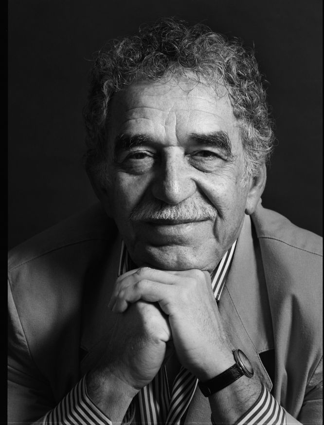

Detalle del Autor

Gabriel García Márquez
Nacionalidad: Colombiana
Fecha de Nacimiento: 06/03/1927
Estado: Activo
Biografía
Gabriel García Márquez fue un escritor, periodista y guionista colombiano, ganador del Premio Nobel de Literatura en 1982 y considerado uno de los máximos exponentes del realismo mágico.